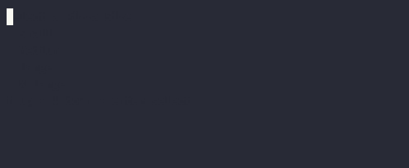

Keyboard and Mouse Input With Raw Mode¶
Normally when reading input from the user with functions like readLineOrNull, the terminal will wait for the user to press enter before sending the input. But if you want to read keys as soon as they are pressed, you can use “raw mode”, which disables line buffering and echo.
Reading Events¶
Mordant provides a few ways to read input events, depending on how much control you need.
Warning
Enabling raw mode disables control character processing, which means that you will need to handle
events like ctrl-c manually if you want your users to be able to exit your program.
Reading Events with Coroutine Flows¶
The simplest way to read events is to include the mordant-coroutines module,
and use receiveEventsFlow, receiveKeyEventsFlow, or receiveMouseEventsFlow to receive
events as a Flow. These functions will handle setting up raw mode and restoring the terminal to
its original state when they are done.
terminal.receiveKeyEventsFlow()
.takeWhile { !it.isCtrlC }
.collect { event ->
terminal.info("You pressed ${event.key}")
}
terminal.receiveMouseEventsFlow()
.takeWhile { !it.right }
.filter { it.left }
.collect { event ->
terminal.info("You clicked at ${event.x}, ${event.y}")
}
terminal.receiveEventsFlow()
.takeWhile { it !is KeyboardEvent || it.isCtrlC }
.collect { event ->
when (event) {
is KeyboardEvent -> terminal.info("You pressed ${event.key}")
is MouseEvent -> terminal.info("You clicked at ${event.x}, ${event.y}")
}
}
Reading Events with Callbacks¶
If you don’t want to use coroutines, you can use a callback lambda with one of receiveEvents, receiveKeyEvents, or receiveMouseEvents, depending on which type of events you want to read.
terminal.receiveKeyEvents { event ->
when {
event.isCtrlC -> InputReceiver.Status.Finished
else -> {
terminal.info("You pressed ${event.key}")
InputReceiver.Status.Continue
}
}
}
terminal.receiveMouseEvents { event ->
when {
event.right -> InputReceiver.Status.Finished
else -> {
if (event.left) terminal.info("You clicked at ${event.x}, ${event.y}")
InputReceiver.Status.Continue
}
}
}
terminal.receiveEvents { event ->
when(event) {
is KeyboardEvent -> when {
event.isCtrlC -> InputReceiver.Status.Finished
else -> {
terminal.info("You pressed ${event.key}")
InputReceiver.Status.Continue
}
}
is MouseEvent -> {
if (event.left) terminal.info("You clicked at ${event.x}, ${event.y}")
InputReceiver.Status.Continue
}
}
}
See the API docs on KeyboardEvent and MouseEvent for more details on the properties of these events.
Tip
For mouse events, only button presses are reported. If you want mouse movement or drag events, you can pass one of the MouseTracking values to receiveMouseEvents and receiveEvents.
Reading Events With a Class¶
If you have a class that you want to use to handle input events, you can use implement InputReceiver and call InputReceiver.receiveEvent.
class MyReceiver : InputReceiver<Unit> {
override fun receiveEvent(event: InputEvent): InputReceiver.Status<Unit> {
if (event is KeyboardEvent) {
if (event.isCtrlC) {
return InputReceiver.Status.Finished
} else {
terminal.info("You pressed ${event.key}")
}
}
return InputReceiver.Status.Continue
}
}
MyReceiver().receiveEvents(terminal)
Reading Events Manually¶
If you need maximum control, you can enter raw mode manually with enterRawMode and read events one
at a time with readKey, readMouse, or readEvent. The object returned by enterRawMode will
restore the terminal to its original state when closed.
terminal.enterRawMode().use { rawMode ->
while (true) {
val event = rawMode.readKey()
if (event == null || event.isCtrlC) break
terminal.info("You pressed: ${event.isCtrlC}")
}
}
Raw Mode Details¶
The exact behavior of which keys and mouse events are reported is highly dependent on the terminal app and operating system. Some things to keep in mind:
- Many special keys and modifier key combinations are not reported, especially on operating systems other than Windows.
- Some key combinations aren’t reported because they’re intercepted by the terminal app to perform actions like switching tabs or closing the window.
- On Linux and macOS, the Escape key isn’t reported as a key press; instead, it begins a “VTI escape
sequence” that the terminal uses to report key presses. For example if you press
Escape, then[, thend, the terminal will report that as the left arrow key being pressed. It’s up to you whether you consider this a feature or a limitation. - Raw mode isn’t supported on JS or wasmJS targets. You can use Node.js’s
readlinemodule to read input in a similar way, or in the browser you can use thekeydownandmousedownevents.
Interactive List Selection¶
Mordant includes a SelectList widget that you can use to create a list of items that the user can select from with the arrow keys and enter.

Selecting a single item¶
If you want to select one item from a list, you can use the interactiveSelectList function or the InteractiveSelectListBuilder class.
val selection = terminal.interactiveSelectList(
listOf("Small", "Medium", "Large", "X-Large"),
title = "Select a Pizza Size",
)
if (selection == null) {
terminal.danger("Aborted pizza order")
} else {
terminal.success("You ordered a $selection pizza")
}
val selection = terminal.interactiveSelectList {
addEntry("Small")
addEntry("Medium")
addEntry("Large")
title("Select Pizza Size")
}
if (selection == null) {
terminal.danger("Aborted pizza order")
} else {
terminal.success("You ordered a $selection pizza")
}
val selection = InteractiveSelectListBuilder(terminal)
.entries("Small", "Medium", "Large")
.title("Select Pizza Size")
.createSingleSelectInputAnimation()
.receiveEvents()
if (selection == null) {
terminal.danger("Aborted pizza order")
} else {
terminal.success("You ordered a $selection pizza")
}
Selecting multiple items¶
If you want to select multiple items from a list, you can use the interactiveMultiSelectList function.
val selection = terminal.interactiveMultiSelectList(
listOf("Pepperoni", "Sausage", "Mushrooms", "Olives"),
title = "Select Toppings",
)
if (selection.isEmpty()) {
terminal.danger("Aborted pizza order")
} else {
terminal.success("You ordered a pizza with ${selection.joinToString()}")
}
val selection = terminal.interactiveMultiSelectList {
addEntry("Pepperoni", selected=true)
addEntry("Sausage", selected=true)
addEntry("Mushrooms")
addEntry("Olives")
title("Select Toppings")
limit(2)
filterable(true)
}
if (selection == null) {
terminal.danger("Aborted pizza order")
} else {
terminal.success("You ordered a pizza with ${selection.joinToString()}")
}
val selection = InteractiveSelectListBuilder(terminal)
.entries("Pepperoni", "Sausage", "Mushrooms", "Olives")
.title("Select Toppings")
.limit(2)
.filterable(true)
.createMultiSelectInputAnimation()
.receiveEvents()
if (selection == null) {
terminal.danger("Aborted pizza order")
} else {
terminal.success("You ordered a pizza with ${selection.joinToString()}")
}